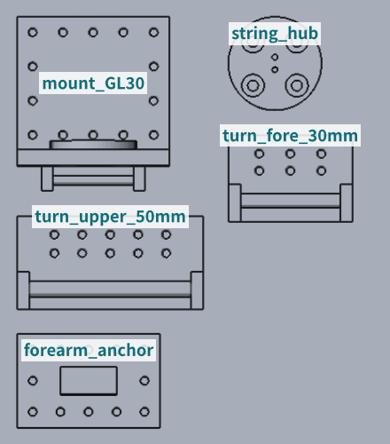
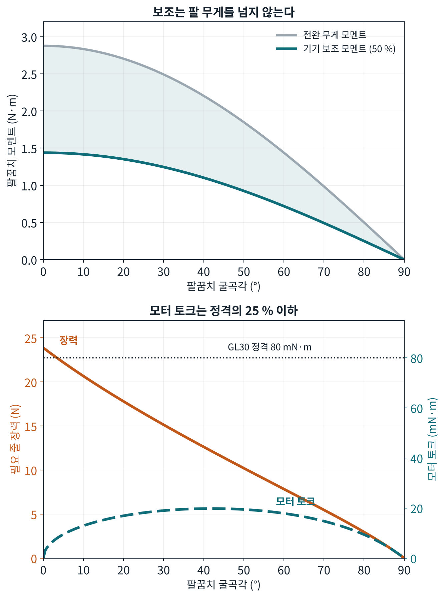

꼬임줄 구동기(TSA)를 이용한 착용형 팔꿈치 보조기기의 인간공학적 설계 및 착용성 평가
배경과 목적
퇴원 후 가정 재활에 쓰는 팔꿈치 보조기기는 보조력과 함께 착용 부담이 낮고 혼자 입을 수 있어야 한다. 강체 외골격은 기계 관절축을 팔꿈치에 정렬해야 하고 무겁다.
TSA는 줄을 꼬아 길이를 줄이므로 관절축 정렬이 필요 없다. TSA 팔꿈치 소프트 슈트 선행연구는 여럿 있으나 인체치수·패턴·착용성 관점의 설계 근거는 부족하다. 선행연구 인용
목적: 인체치수와 착용성을 고려한 TSA 팔꿈치 굴곡 보조기기를 설계하고 착용성을 평가한다.
설계 기준
팔 단면 둘레
Size Korea 20–24세 남성 평균 3D 형상을 팔꿈치부터 잘라 단면 둘레를 구했다.

JavaScript 시뮬레이터
굴곡각별 장력·수축량·토크·회전수를 계산해 밴드 위치를 정했다.

밴드와 착용
팔 곡면에 맞춘 패턴
3D 인체 형상을 바탕으로 YUKA CAD 맞춤(MTM) 패턴 기능으로 팔 곡면에 맞는 밴드 패턴을 만들었다. 절차 확인
되접기 여밈
네오프렌 밴드 끝을 출력한 링에 통과시켜 180° 접고 벨크로로 붙인다. 당긴 채로 한 손으로 고정할 수 있고, 링에서 가닥이 둘이 되어 조이는 힘이 약 2배가 된다.

한 벌로 맞는 범위
| 폭 | 둘레 범위 | 모집단 | |
|---|---|---|---|
| 상완 | 50 | 227–340 | 96.5 % |
| 전완 | 30 | 176–240 | 98.1 % |
되접힌 꼬리가 마운트(42 mm)를 넘을 수 없어 최소 둘레가 정해진다. Size Korea 평균·표준편차로 환산.
조임 압력
| 당기는 힘 | 3 N | 6 N | 12 N |
|---|---|---|---|
| 상완 | 10 | 21 | 41 |
| 전완 | 23 | 46 | 92 |
단위 mmHg, 라플라스 식 p = T/(r·w). 지속 착용 한계 약 20 mmHg → 전완은 손가락 하나 들어갈 정도로만 조인다.
어깨끈
25 mm 웨빙이 마운트 앞 → 어깨 위 → 밴드 뒤 고리로 닫힌 고리를 이뤄 상완 밴드가 흘러내리지 않게 잡는다.
구동부와 제어
TSA 원리
L² = p² + (r·θ)²
줄 두 가닥(축–줄 반지름 r = 2 mm)을 θ만큼 꼬면 줄 길이 p가 직선거리 L로 줄어든다. 60° 굴곡에 필요한 꼬임은 약 13.9회전이며, 안전 상한은 16회전이다. 재계산
부품

| 모터 | CubeMars GL30, 엔코더 AS5048A 내장 |
| 드라이버 | SimpleFOC Mini (DRV8313, 2.5 A) |
| 제어기 | ESP32-C3, 스마트폰 Wi-Fi 조작 |
| 센서 | MPU-6050 × 2 (상완 0x68 · 전완 0x69) |
| 전원 | 12 V |
자세 기반 중력보상
- 두 IMU로 팔의 움직임(굴곡각)을 감지
- 전완 무게의 설정 비율(기본 50 %)만큼 장력 산출
- 토크 제어로 착용자가 언제나 이길 수 있음
- 110° 이상 감기 금지 · 통신 0.4 s 끊기면 정지
IMU 오차
저역통과 5 Hz에서 잡음은 0.05°로 작고, 실제 오차는 영점(약 3°)과 장착각이다 → 착용 직후 팔을 편 자세로 영점을 잡는다.
결과
보조력

줄 장력 여유
| 굴곡 | 필요 장력 | 드라이버 연속 | 순간 |
|---|---|---|---|
| 45° | 11.4 N | 38 N | 54 N |
| 60° | 7.8 N | 29 N | 41 N |
드라이버 전류 한계(연속 1.75 A, 순간 2.5 A) 기준 3–5배 여유.
구동 확인
정렬 후 무부하 1.8 V에서 650–680 rpm 안정 회전. 기기 질량 측정 예정
착용성 평가
20대 남성 10명 · 5점 리커트 · 비구동 상태
직접 착용 → 2분 적응 → 굽혔다 펴기 10회 → 60°에서 5초 정지 3회 → 착용한 채 응답.
| 착용 과정 | 혼자 착용 · 착탈 시간 · 길이 적합 |
| 고정 상태 | 상완 · 전완 밴드 · 어깨끈 |
| 압박과 자극 | 조임 통증 · 눌림/쓸림 · 저림 |
| 무게와 동작 | 무게 부담 · 동작 방해 |
| 수용도 | 가정 착용 거부감 · 전반 만족 |
5개 영역 13문항. 항목별 평균 11/19–21 평가 후 기입
결론
- 인체치수 → 밴드 위치 → 맞춤 패턴 → 착용 평가로 이어지는 설계 과정을 제시했다.
- 관절축 정렬 없이 줄 수축만으로 굴곡을 보조하며, 필요 토크는 모터 정격 안에 있다.
- 착용성 평가 결과 결과 예정
한계와 향후 연구
- 20대 남성 평균 한 체형 기준 → 다양한 체형·연령
- IMU는 움직임만 감지 → EMG 기반 의도 감지
- 구동 상태의 보조 효과·착용성 검증